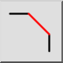
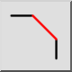
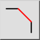
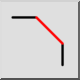

Chaflán / bisel
Barra de herramienta / icono:
 

Menú: Modificar > Chaflán / bisel
Acceso directo: C, H
Comandos: bevel | chamfer | ch
Esta es una traducción automática.
Barra de herramienta / icono:
 

Menú: Modificar > Chaflán / bisel
Acceso directo: C, H
Comandos: bevel | chamfer | ch
Bisela una esquina formada por dos entidades. Opcionalmente, las entidades del borde de la esquina se pueden recortar automáticamente para adaptarse a la nueva forma.